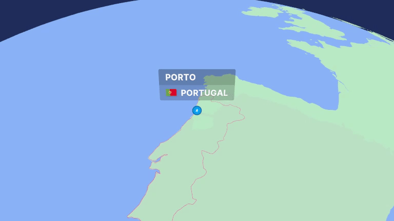

Milénios de História e Superação
O Caminho de Santiago é uma das peregrinações mais célebres do mundo, unindo viajantes de todas as origens até à lendária Catedral de Santiago de Compostela.
A nossa plataforma permite explorar itinerários detalhados, descobrir variantes históricas e calcular as etapas necessárias para uma viagem memorável e segura.

Teste os Seus Conhecimentos
Responda a perguntas sobre monumentos, cidades e lendas dos Caminhos. Acumule pontos no seu perfil e chegue ao topo do ranking comunitário!
Benefícios de Peregrinar
Uma experiência transformadora reconhecida por viajantes de todo o planeta.
Aventura Autêntica
Descubra novas paisagens, pontes medievais e viva experiências marcantes a cada quilómetro percorrido.
Bem-Estar & Saúde
Encontre serenidade, reconecte-se com a natureza e fortaleça o corpo e mente ao ar livre.
Partilha & Tradição
Sinta o lendário espírito comunitário e partilhe memórias com peregrinos de todas as partes do mundo.